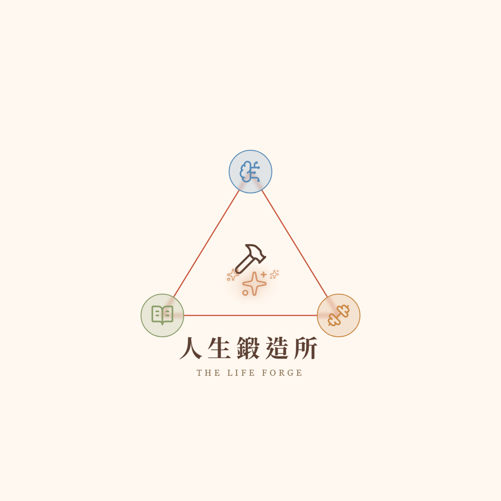
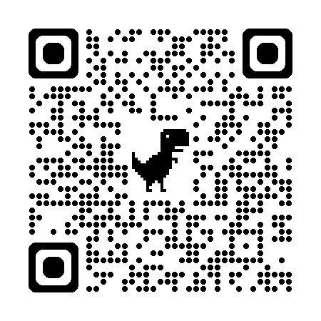

<!DOCTYPE html>
<html lang="zh-Hant">
<head>
  <meta charset="UTF-8">
  <meta name="viewport" content="width=device-width, initial-scale=1.0">
  <title>與 AI 共舞｜Josh / 人生鍛造所</title>

  <!-- Google Fonts -->
  <link rel="preconnect" href="https://fonts.googleapis.com">
  <link rel="preconnect" href="https://fonts.gstatic.com" crossorigin>
  <link href="https://fonts.googleapis.com/css2?family=Noto+Serif+TC:wght@700&display=swap" rel="stylesheet">

  <!-- 品牌主題 -->
  <link rel="stylesheet" href="css/theme.css">
</head>
<body>

  <!-- ============================================================
       Sidebar：頁面導航列（按 S 鍵 toggle）
       ============================================================ -->
  <nav id="sidebar" class="sidebar">
    <div class="sidebar-inner" id="sidebar-list">
      <!-- JS 動態生成 -->
    </div>
  </nav>

  <!-- ============================================================
       主內容區：所有頁面 DOM 預先建好
       ============================================================ -->
  <main id="stage">
    <!-- JS 動態生成所有頁面 -->
  </main>

  <!-- 底部進度條 -->
  <div class="progress-bar">
    <div class="progress-bar-fill" id="progress-fill"></div>
  </div>

  <!-- QR Code 生成（本地備份） -->
  <script src="js/qrcode.min.js"></script>

  <!-- 專案腳本（工作坊型：無 Supabase） -->
  <script src="js/timer.js"></script>

  <script>
    /**
     * 簡報 SPA 核心控制器
     * 純 HTML/CSS/JS，不依賴任何框架
     */
    (function () {
      'use strict';

      // ============================================================
      // PAGES 陣列（4/16 引導學院 AI 分享 — 14 NLM slides + HTML 增補頁）
      // ============================================================
      const PAGES = [
        // ==== 開場 ====
        { id: 'cover', type: 'image', src: 'slides/slide_01.png', title: '封面：與 AI 共舞', section: '開場' },
        { id: 'doc-driven', type: 'image', src: 'slides/slide_v2_01_cover.png', title: '文件驅動的自動化', section: '' },
        { id: 'tool-stuck', type: 'image', src: 'slides/slide_v1_02_stuck.png', title: '工具變簡單了，為何原地踏步？', section: '' },
        { id: 'lego-code', type: 'image', src: 'slides/slide_v2_02_lego.png', title: '像樂高，但本質仍是寫程式', section: '' },
        { id: 'paradigm-shift', type: 'image', src: 'slides/slide_v2_05_compare.png', title: '程式驅動 vs 文件驅動', section: '' },

        // ==== 觀念地基 ====
        { id: 'word-chain', type: 'image', src: 'slides/slide_02.png', title: 'AI 並沒有在思考', section: '觀念地基' },
        { id: 'facilitator-bridge', type: 'quote', title: '引導師母語橋', text: '我們大家都會引導人。\n而現在 AI 更需要我們的引導，\n因為他只是在做計算，\n他並不是真的會思考。', section: '' },
        { id: 'calm-ai', type: 'image', src: 'slides/slide_s03_calm.png', title: '越冷靜，越聰明', section: '' },
        { id: 'context-half', type: 'image', src: 'slides/slide_03.png', title: '只懂提示詞等於只做對了一半', section: '' },
        { id: 'context-3spheres', type: 'image', src: 'slides/slide_v2_08_3spheres.png', title: '三個引導層次', section: '' },
        { id: '80-words-magic', type: 'image', src: 'slides/slide_s01_80words.png', title: '80 字的魔法', section: '' },
        { id: 'design-actively', type: 'quote', title: '主動設計', text: '重點不是「怎麼問」，\n而是「先布置好它眼前看到的世界」。', section: '' },

        // ==== 第 1 層 preferences ====
        { id: 'pref-foundation', type: 'image', src: 'slides/slide_ai09_pref.png', title: '自動化的第一層地基：偏好設定', section: '第 1 層 preferences' },
        { id: 'preferences-rule', type: 'image', src: 'slides/slide_05.png', title: '給予條件，而非命令', section: '' },
        { id: 'condition-not-command', type: 'quote', title: '給條件不給命令', text: '❌ 「請簡潔回答」\n\n✅ 「回答長度符合問題複雜度，\n　　簡單問題不要給長答案」', section: '' },

        // ==== 第 2 層 memory ====
        { id: 'memory-foundation', type: 'image', src: 'slides/slide_ai10_memory.png', title: '自動化的第二層地基：記憶', section: '第 2 層 memory' },
        { id: 'memory-auto', type: 'image', src: 'slides/slide_06.png', title: '記憶是自動產生的，但它會記錯', section: '' },

        // ==== L2→L3 過渡 ====
        { id: 'context-pollution', type: 'image', src: 'slides/slide_07.png', title: '資訊全塞在一起，只會互相污染', section: 'L2→L3 過渡' },

        // ==== 第 3 層 skill ====
        { id: 'skill-foundation', type: 'image', src: 'slides/slide_ai11_skill.png', title: '自動化的第三層地基：技能文件', section: '第 3 層 skill' },
        { id: 'skill-toolbox', type: 'image', src: 'slides/slide_08.png', title: '按需加載的專屬工具箱', section: '' },

        // ==== Skill 深入 ====
        { id: 'skill-soul', type: 'image', src: 'slides/slide_10.png', title: '你踩過的坑，就是 Skill 的靈魂', section: '' },
        { id: 'skill-asset', type: 'image', src: 'slides/slide_11.png', title: '這是一份會越用越強的資產', section: '' },

        // ==== 學員動手 ====
        { id: 'practice-prompt', type: 'text', title: '實作流程', text: '1. 開新對話\n2. 從 L1 直接問\n3. 加上下文 → 看到答案變好\n4. 封裝成 skill\n5. 測試\n\n卡住舉手，Josh 過去支援。', section: '學員動手' },

        // ==== 收尾 ====
        { id: 'lifelong-band', type: 'image', src: 'slides/slide_s02_lifelong.png', title: '一輩子的樂團', section: '收尾' },
        { id: 'closing', type: 'image', src: 'slides/slide_12.png', title: '有主動性的人，永遠不會被取代', section: '' },
        // ==== 結尾 ====
        { id: 'ending', type: 'ending', title: '謝謝大家', section: '結尾' },
      ];

      // ============================================================
      // 目前頁碼（0-based）
      // ============================================================
      let currentIndex = 0;

      // ============================================================
      // 頁面 DOM 建構
      // ============================================================
      const stage = document.getElementById('stage');

      /**
       * 將含換行的文字轉成帶 <br> 的 HTML
       * 用 textContent 賦值後再替換，防 XSS
       */
      function textToHtml(str) {
        const temp = document.createElement('span');
        temp.textContent = str;
        return temp.innerHTML.replace(/\n/g, '<br>');
      }

      /**
       * 時間線頁的節點資料
       */
      const TIMELINE_NODES = [
        { label: 'Talk 1', sub: '反芻三天' },
        { label: 'Talk 2', sub: '反芻一兩天' },
        { label: 'Talk 3-5', sub: '搞懂了減法' },
        { label: 'Talk 6', sub: '從容面對' },
        { label: 'Talk 7', sub: '50 分鐘' },
      ];

      // 為每種頁面建構 DOM
      PAGES.forEach((page, index) => {
        const el = document.createElement('div');
        el.className = 'page';
        el.id = `page-${page.id}`;
        el.dataset.index = index;
        el.dataset.type = page.type;

        switch (page.type) {
          // ────────────────────────────
          // NLM 圖片頁
          // ────────────────────────────
          case 'image':
            el.classList.add('page-image');
            el.innerHTML = ``;
            break;

          // ────────────────────────────
          // 文字頁（手機翻面、自願分享等）
          // ────────────────────────────
          case 'text':
            el.classList.add('page-text');
            el.innerHTML = `
              <div class="text-content">
                <p>${textToHtml(page.text)}</p>
              </div>`;
            break;

          // ────────────────────────────
          // 故事頁
          // ────────────────────────────
          case 'story':
            el.classList.add('page-story');
            el.innerHTML = `
              <div class="story-block">
                <div class="story-quote-mark">\u201C</div>
                <div class="story-text">${textToHtml(page.text)}</div>
                <div class="story-decoration"></div>
              </div>`;
            break;

          // ────────────────────────────
          // 手機 Callback 頁
          // ────────────────────────────
          case 'callback':
            el.classList.add('page-callback');
            el.innerHTML = `
              <div class="callback-content">
                <p>${textToHtml(page.text)}</p>
              </div>`;
            break;

          // ────────────────────────────
          // 金句頁
          // ────────────────────────────
          case 'quote':
            el.classList.add('page-quote');
            el.innerHTML = `
              <div class="quote-decoration-top"></div>
              <p class="quote-text">${textToHtml(page.text)}</p>
              <div class="quote-decoration-bottom"></div>`;
            break;

          // ────────────────────────────
          // 呼吸過渡頁
          // ────────────────────────────
          case 'breathing':
            el.classList.add('page-breathing');
            el.innerHTML = `
              <div class="breathing-ring"></div>
              <p class="breathing-text">${textToHtml(page.text)}</p>`;
            break;

          // ────────────────────────────
          // 計時器頁
          // ────────────────────────────
          case 'timer':
            el.classList.add('page-timer');
            el.dataset.timer = page.timer;
            // 提示文字放在 timer 上方
            const timerTextHtml = page.text ? `<p class="timer-prompt">${textToHtml(page.text)}</p>` : '';
            el.innerHTML = `
              ${timerTextHtml}
              <div class="timer-container" data-duration="${page.timer}"></div>
              <div class="timer-hint">按空白鍵開始</div>`;
            break;

          // ────────────────────────────
          // QR Code 頁
          // ────────────────────────────
          case 'qr':
            el.classList.add('page-qr');
            const qrId = `qrcode-${page.questionId}`;
            const urlId = `qr-url-${page.questionId}`;
            el.innerHTML = `
              <p class="qr-question">${textToHtml(page.question)}</p>
              <div class="qr-wrapper" id="${qrId}"></div>
              <p class="qr-url" id="${urlId}"></p>`;
            break;

          // ────────────────────────────
          // 投稿牆頁
          // ────────────────────────────
          case 'wall':
            el.classList.add('page-wall');
            el.dataset.questionId = page.questionId;
            const wallId = `submission-wall-${page.questionId}`;
            const counterId = `submission-counter-${page.questionId}`;
            el.innerHTML = `
              <div class="wall-header">
                <div class="wall-counter">
                  <span class="wall-counter-number" id="${counterId}">0</span>
                  <span class="wall-counter-label">${page.counterLabel}</span>
                </div>
              </div>
              <div class="wall-grid" id="${wallId}"></div>`;
            break;

          // ────────────────────────────
          // 結尾頁（Logo + QR Codes）
          // ────────────────────────────
          case 'ending':
            el.classList.add('page-ending');
            el.innerHTML = `
              <div class="ending-content">
                
                <p class="ending-name">Josh / 人生鍛造所</p>
                <p class="ending-thanks">謝謝大家</p>
                <div class="ending-qr-row">
                  <div class="ending-qr-item">
                    
                    <span class="ending-qr-label">Instagram</span>
                  </div>
                  <div class="ending-qr-item">
                    
                    <span class="ending-qr-label">Facebook</span>
                  </div>
                </div>
              </div>`;
            break;

          // ────────────────────────────
          // 時間線頁
          // ────────────────────────────
          case 'timeline':
            el.classList.add('page-timeline');
            let nodesHtml = TIMELINE_NODES.map((n, i) => `
              <div class="tl-node ${i === TIMELINE_NODES.length - 1 ? 'tl-node-active' : ''}">
                <div class="tl-dot"></div>
                <span class="tl-label">${n.label}<br>${n.sub}</span>
              </div>`).join('');
            el.innerHTML = `
              <div class="tl-story">
                <p>從第一次到今天，六次站上台。<br>每次大象都來了，但每次牠待的時間都更短。</p>
              </div>
              <div class="tl-wrapper">
                <div class="tl-line"></div>
                <div class="tl-nodes">${nodesHtml}</div>
              </div>`;
            break;
        }

        stage.appendChild(el);
      });


      // ============================================================
      // Sidebar 建構
      // ============================================================
      const sidebarList = document.getElementById('sidebar-list');
      let lastSection = '';

      PAGES.forEach((page, index) => {
        // 分站標記
        if (page.section && page.section !== lastSection) {
          lastSection = page.section;
          const sectionEl = document.createElement('div');
          sectionEl.className = 'sidebar-section';
          sectionEl.textContent = page.section;
          sidebarList.appendChild(sectionEl);
        }

        const item = document.createElement('div');
        item.className = 'sidebar-item';
        item.dataset.index = index;
        const numSpan = document.createElement('span');
        numSpan.className = 'sidebar-num';
        numSpan.textContent = index + 1;
        item.appendChild(numSpan);
        item.appendChild(document.createTextNode(' ' + page.title));
        item.addEventListener('click', () => goToPage(index));
        sidebarList.appendChild(item);
      });

      // ============================================================
      // 頁面切換核心
      // ============================================================
      const allPages = stage.querySelectorAll('.page');
      const sidebarItems = sidebarList.querySelectorAll('.sidebar-item');
      const progressFill = document.getElementById('progress-fill');

      function goToPage(index) {
        if (index < 0 || index >= PAGES.length) return;
        if (index === currentIndex) return;

        // 移除舊頁面 active
        allPages[currentIndex].classList.remove('active');
        sidebarItems.forEach(i => i.classList.remove('active'));

        currentIndex = index;

        // 啟用新頁面
        allPages[currentIndex].classList.add('active');

        // Sidebar 高亮
        const activeItem = sidebarList.querySelector(`.sidebar-item[data-index="${currentIndex}"]`);
        if (activeItem) {
          activeItem.classList.add('active');
          // 捲動到可見範圍
          activeItem.scrollIntoView({ block: 'nearest', behavior: 'smooth' });
        }

        // 進度條
        const progress = (currentIndex / (PAGES.length - 1)) * 100;
        progressFill.style.width = progress + '%';

      }

      // 初始化第一頁
      allPages[0].classList.add('active');
      const firstSidebarItem = sidebarList.querySelector('.sidebar-item[data-index="0"]');
      if (firstSidebarItem) firstSidebarItem.classList.add('active');

      // ============================================================
      // 鍵盤狀態機
      // ============================================================
      /** 狀態：'navigation' | 'timer-active' */
      let keyboardState = 'navigation';
      let sidebarVisible = false;
      const sidebar = document.getElementById('sidebar');

      function toggleSidebar() {
        sidebarVisible = !sidebarVisible;
        sidebar.classList.toggle('open', sidebarVisible);
      }

      document.addEventListener('keydown', (e) => {
        // S 鍵：sidebar toggle（任何狀態都可用）
        if (e.code === 'KeyS' && !e.ctrlKey && !e.altKey && !e.metaKey) {
          e.preventDefault();
          toggleSidebar();
          return;
        }

        if (keyboardState === 'navigation') {
          // 方向鍵 / PageUp/PageDown 切頁
          if (['ArrowRight', 'ArrowDown', 'PageDown'].includes(e.code)) {
            e.preventDefault();
            goToPage(currentIndex + 1);
          } else if (['ArrowLeft', 'ArrowUp', 'PageUp'].includes(e.code)) {
            e.preventDefault();
            goToPage(currentIndex - 1);
          }
          // 空白鍵在計時器頁啟動計時器
          else if (e.code === 'Space') {
            e.preventDefault();
            const pageData = PAGES[currentIndex];
            if (pageData.type === 'timer') {
              presentationTimer.startFromPage(allPages[currentIndex], pageData.timer);
            }
          }
        } else if (keyboardState === 'timer-active') {
          // 方向鍵鎖定
          if (['ArrowRight', 'ArrowDown', 'ArrowLeft', 'ArrowUp', 'PageDown', 'PageUp'].includes(e.code)) {
            e.preventDefault();
            return;
          }
          // 空白鍵：暫停/繼續
          if (e.code === 'Space') {
            e.preventDefault();
            presentationTimer.togglePause();
          }
          // Escape：退出計時器回 navigation
          if (e.code === 'Escape') {
            e.preventDefault();
            presentationTimer.abort();
          }
        }
      });

      // 防止瀏覽器預設捲動（僅主舞台區，側欄保留捲動）
      stage.addEventListener('wheel', (e) => { e.preventDefault(); }, { passive: false });

      // 狀態機 API（供 timer.js 呼叫）
      window.setKeyboardState = function (state) {
        keyboardState = state;
      };

      // ============================================================
      // 計時器初始化
      // ============================================================
      presentationTimer.init();

      // ============================================================
      // QR Code 生成
      // ============================================================
      function generateQR(containerId, url) {
        const container = document.getElementById(containerId);
        if (!container || container.children.length > 0) return;
        new QRCode(container, {
          text: url,
          width: 220,
          height: 220,
          colorDark: '#5C4033',
          colorLight: '#FFF8F0',
          correctLevel: QRCode.CorrectLevel.M
        });
      }

    })();
  </script>

</body>
</html>
